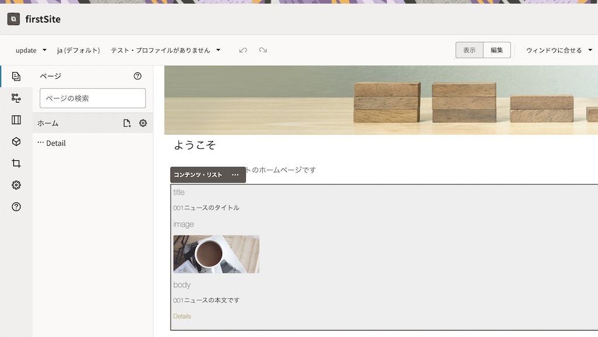
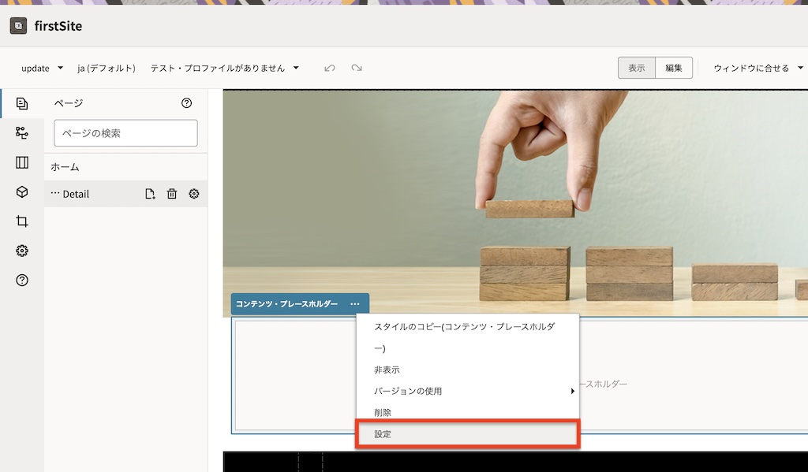

この文書は Oracle Content and Experience (OCE) のコンテンツ・レイアウトの編集し、Web ページ上でのコンテンツ・アイテムの表示形式をカスタマイズする方法をステップ・バイ・ステップで紹介するチュートリアルです
この文書は、2021年1月時点での最新バージョン(21.1.1)を元に作成されてます
前提条件
- Oracle Content and Experience インスタンスを作成する
- Oracle Content and Experience を Headless CMS として使ってみよう【初級編】が完了していること
- Oracle Content and Experience を WebCMS として使ってみよう【初級編】が完了していること
- OCE の利用ユーザーに、少なくとも下記4つのOCE インスタンスのアプリケーション・ロールが付与されていること
- CECContentAdministrator
- CECDeveloperUser
- CECEnterpriseUser
- CECRepositoryAdminisrrator
[Memo]
ユーザーの作成とアプリケーションロールの付与手順は、Oracle Content and Experience インスタンスの利用ユーザーを作成する をご確認ください。
1. 説明
1.1 コンテンツ・レイアウトとは？
コンテンツ・レイアウトとは 作成されたコンテンツ・アイテムの表示形式 を定めたものです。具体的には、Web ページにコンテンツ・アイテムを配置した時のレイアウト(=HTML)を定義したものになります。詳細は、下記ドキュメントをご参照ください
1.2 作成済サイトとコンテンツ・タイプの確認
前提条件にあるチュートリアルをすべて完了すると、firstSite というサイトが表示されます
-
firstSite: ホームページ

-
firstSite: コンテンツ・アイテムの詳細表示ページ

前提条件のチュートリアルでは、2種類のコンテンツ・レイアウトを作成し、それぞれをコンテンツ・タイプ sampleNewsType のレイアウトとして設定しました。設定内容は以下の通りです
[Memo]
コンテンツ・レイアウトの設定は、ADMINISTRATION:コンテンツ > コンテンツ・タイプ > sampleNewsType > コンテンツ・レイアウト より確認できます

- 説明
- コンテンツ・アイテムのデフォルト:「コンテンツ・アイテム」コンポーネントで利用するデフォルトのコンテンツ・レイアウト (=sampleNewsType-detail)
- コンテンツ・リストのデフォルト:「コンテンツ・リスト」コンポーネントで利用するデフォルトのコンテンツ・レイアウト (=sampleNewsType-overview)
- 空のコンテンツ・リストのデフォルト:「コンテンツ・リスト」コンポーネントで、表示するコンテンツ・アイテムが0件だった時に利用するコンテンツ・レイアウト (=sampleNewsType-overview)
- コンテンツ・プレースホルダーのデフォルト:「コンテンツ・プレースホルダー」コンポーネントで利用するデフォルトのコンテンツ・レイアウト (=sampleNewsType-detail)
1.3 サイト・ページ上に配置されているコンポーネントの確認
firstSite をサイト編集画面で開き、ホームページと詳細表示ページに配置されているコンポーネントと、表示レイアウトの設定を確認します
-
左ナビゲーションの 「サイト」 をクリックします
-
firstSite を選択し、「開く」 をクリックします
-
サイトの編集画面が表示されます。「ベース・サイト▼」 をクリックし、「新規更新の作成」 を選択します
-
「新規更新の名前の指定」に 「update」 と入力し、「OK」 をクリックします
-
「update」に切り替わっていることを確認します。表示側にあるスイッチを 「編集」 モードに切り替えます
-
左サイドバーの 「ページ」→「ホーム」 をクリックします
-
「段落」コンポーネントの下に 「コンテンツ・リスト」 コンポーネントが配置されていることを確認します

-
「コンテンツ・リスト」コンポーネントの 「設定」 をクリックします
-
「アイテムの表示」に 「コンテンツ・リストのデフォルト」 が設定されていることを確認します。
[Memo]
「コンテンツ・リストのデフォルト」とは、コンテンツ・タイプの「コンテンツ・レイアウト」タブで設定した コンテンツ・リストのデフォルトレイアウト （ここでは sampleNewsType-overview）でコンテンツ・アイテムを表示する、という意味になります。詳細は書きドキュメントを参考にしてください -
「…Detail Page」 をクリックします
-
Detail Page の中央に 「コンテンツ・プレースホルダー」 が配置されていることを確認します
[Memo]
「コンテンツ・プレースホルダー」コンポーネントは、指定されたコンテンツ・アイテムを動的に表示するコンポーネントです。具体的には、ニュース一覧を表示するページで1件のニュースでクリックした時に、そのニュースの全文を詳細表示する際に利用します。詳細は、下記ドキュメントを参考にしてください -
「コンテンツ・プレースホルダー」コンポーネントの 「設定」 をクリックします

-
「アイテムの表示」に 「コンテンツ・プレースホルダーのデフォルト」 が設定されていることを確認します
[Memo]
「コンテンツ・プレースホルダーのデフォルト」とは、コンテンツ・タイプの「コンテンツ・レイアウト」タブで設定した コンテンツ・プレースホルダーのデフォルト （ここでは sampleNewsType-detail）でコンテンツ・アイテムを表示する、という意味になります。詳細は書きドキュメントを参考にしてください -
表示モードに切り替えます
-
以上で、配置されているコンポーネントと表示レイアウトの設定の確認は終了です。次項からそれぞれのコンポーネントが利用しているコンテンツレイアウトを編集し、表示形式を変更します
2. sampleNewsType-overviewの編集
「コンテンツ・リスト」コンポーネントのデフォルトとして設定されている sampleNewsType-overview コンテンツ・レイアウトを編集します。
ここでは、sampleNewsType から作成されたコンテンツ・アイテムの タイトル(title) と メイン画像(image) のみを一覧表示するコンテンツ・レイアウトを作成します。さらに、表示されたタイトル or メイン画像をクリックすると、「コンテンツ・プレースホルダー」が配置された詳細表示ページ（Detail Page）に遷移するリンクも設定します
2.1 コンテンツ・レイアウトの確認
-
sampleNewsType-overview コンテンツ・レイアウトを開きます。ここではWebブラウザを利用します
-
左ナビゲーションメニューの 「開発者」→「すべてのコンポーネントを開く」 をクリックします
-
sampleNewsType-overview をクリックします

[Memo]
フィルタで 「コンテンツ・レイアウト」 を選択すると、コンテンツ・レイアウトのみを表示させることができます -
assets フォルダをクリックします

-
design.css と layout.html と render.js をローカルPCにダウンロードします
-
[解説]コンテンツ・レイアウトの内容
-
コンテンツ・レイアウトは複数のフォルダおよびファイルで構成されます。コンテンツ・レイアウトのカスタマイズは、主に assets フォルダ配下の3つのファイル を編集します。なお、publish フォルダ配下には、公開サイトで利用されているコンテンツ・レイアウトファイル一式が格納されます。
sampleNewsType-overview assets design.css # コンテンツ・レイアウト専用のスタイルシート (CSS) layout.html # HTML の表示形式を定義するHTMLファイル render.js # layout.html で利用するデータを取得・変更します。必要に応じて動的な動作を追加できます publish # 公開中のサイトで利用されているコンテンツ・レイアウトの構成ファイル一式 assetsappinfo.json _folder_icon.png -
コンテンツ・レイアウトの開発に関する情報は、下記マニュアルも参考にしてください
-
2.2 render.js の編集
-
ローカルPCにダウンロードした render.js をテキストエディタで開きます
-
88-90行目の
// Handle fields specific to this content type.のコメント文の下に、以下のコードをコピー&ペーストし、テキストエディタを 「保存」 します// // Handle fields specific to this content type. // if (data["image"]) { data["image"]["url"] = contentClient.getRenditionURL({"id": data["image"].id}); }
2.3 layout.html の編集
-
ローカルPCにダウンロードした layout.html をテキストエディタで開きます
-
layout.html に記述されるHTMLコードを すべて削除 します
-
以下のHTMLをコピー&ペーストし、テキストエディタを 「保存」 します
{{#fields}} <div class="sampleNewsType"> <a href="{{scsData.detailPageLink}}" title="{{title}}"> <img src="{{image.url}}"></img> <p>{{title}}</p> </a> </div> {{/fields}}
2.4 design.css の編集
-
ローカルPCにダウンロードした design.css をテキストエディタで開きます
-
design.css に記述されるスタイルシートをすべて削除します
-
以下のスタイルシートをコピー＆ペーストし、テキストエディタを保存します
.sampleNewsType { font-family: 'Helvetica Neue', 'Segoe UI', sans-serif-regular, Helvetica, Arial; font-size: 16px; margin:0px; padding:0px; font-style: normal; color: #333; } .sampleNewsType li { list-style: none; font-size: 14px; font-style: normal; font-variant-caps: normal; color: #333; font-weight: 200; margin: 0em 0em 1em 0em; } .sampleNewsType img { width: 100%; max-width: 190px; margin:0 5px; border-radius: 3px; float: left; vertical-align: middle; } .sampleNewsType h1 { font-size: 24px; color: #333; margin:0px; font-weight:300; } .sampleNewsType h2 { font-size: 18px; color: #767676; margin:0px; font-weight:300; } .sampleNewsType p { margin:0px; vertical-align: middle; }
2.5 編集ファイルのアップロード
-
開発者 > コンポーネント > sampleNewsType-overview > assets を開きます
-
layout.html を選択し、「新規バージョンのアップロード」 をクリックします
-
ローカルPCで編集した layout.html を指定します。この時、同じファイル名でアップロードします
-
新規バージョンとして、layout.html が登録されたことを確認します
-
同じ手順を繰り返し、ローカルPCで編集した design.css と render.js を新規バージョンとしてアップロードします
2.6 確認
sampleNewsType-overview レイアウトが更新されたことを、サイト編集画面より確認します
-
左ナビゲーションから 「サイト」 をクリックします
-
firstSite を選択し、「開く」 をクリックします
-
画面下のコンテンツ・アイテムの表示形式が変更されていることを確認します
-
表示される 画像 or タイトル をクリックすると、コンテンツ・アイテムの詳細表示ページに遷移することを確認します。なお、sampleNewsType-detail コンテンツ・レイアウトを編集していないため、表示形式に変更はありません
-
サイト編集ページを閉じます
3. sampleNewsType-detailの編集
「コンテンツ・プレースホルダー」コンポーネントのデフォルトとして設定されている sampleNewsType-detail コンテンツ・レイアウトを編集します。
編集手順は、前の手順と同じです。sampleNewsType-detail > assets の render.js、layout.html、design.css をダウンロードし、編集します。最後に、新規バージョンとしてアップロードします
3.1 render.js、layout.html, design.css の編集とアップロード
ファイルを編集し、新規バージョンとしてアップロードします。変更後のコードはそれぞれ以下の通りです
-
render.js（127行目の
// Retrieve the reference item from the query result.の下のコードをコメントアウトし、以下のコードをコピー&ペースト）// Retrieve the reference item from the query result. //if (data["image"] && data["image"].id === item.id) { // data["image"]["contentItem"] = item; //} if (data["image"]) { data["image"]["url"] = contentClient.getRenditionURL({"id": data["image"].id}); } -
layout.html（以下のHTMLコードにすべて差し替え）
{{#fields}} <div class="sampleNewsType"> <h1>{{title}}</h1> <img src="{{image.url}}"></img> <p>{{{body}}}</p> </div> {{/fields}} -
design.css（以下のスタイルシートにすべて差し替え）
.sampleNewsType { width: 100%; font-family: 'Helvetica Neue', 'Segoe UI', sans-serif-regular, Helvetica, Arial; font-size: 18px; margin:0; padding:0; font-style: normal; color: #333; } .sampleNewsType li { list-style: none; font-size: 14px; font-style: normal; font-variant-caps: normal; color: #333; font-weight: 200; margin: 0em 0em 1em 0em; } .sampleNewsType img { width: 100%; } .sampleNewsType h1 { font-size: 250%; width: 100%; margin:0; padding: 1em 0; } .sampleNewsType h2 { font-size: 200%; font-weight: bold; margin:0px; font-weight:300; } .sampleNewsType p { margin:5px, 0px; }
3.2 確認
sampleNewsType-detail レイアウトが更新されたことを、サイト編集画面より確認します
-
左ナビゲーションから 「サイト」 をクリックします
-
firstSite を選択し、「開く」 をクリックします
-
ホームページ下部のコンテンツ・アイテムの タイトル or 画像 をクリックします
-
コンテンツ・アイテムの詳細表示ページが変更されていることを確認します
-
サイト編集ページを閉じます
4. 変更内容を公開サイトに適用する
コンテンツ・レイアウトの更新内容を、公開サイトに適用します。公開サイトに適用する際は、コンテンツ・レイアウトの再公開、もしくはサイトの再公開を実施します。
今回は、コンテンツ・レイアウトの再公開を実施し、コンテンツ・レイアウトのみを公開サイトに適用します
4.1 コンテンツ・レイアウトの再公開
-
左ナビゲーションメニューの 「開発者」→「すべてのコンポーネントを開く」 をクリックします
-
sampleNewsType-overview を選択し、「再公開」 をクリックします

-
確認のダイアログが表示されます。「確認して続行」 にチェックを入れ、「OK」 をクリックします

-
コンポーネントの再公開が実行されます
-
同じ手順を繰り返し、sampleNewsType-detail を再公開します

4.2 公開サイトの確認
-
左ナビゲーションから 「サイト」 をクリックします
-
firstSite を選択し、「表示」 をクリックします
-
公開サイトのホームページおよび記事詳細ページのレイアウトが更新されていることを確認します
-
ホームページ

-
記事詳細ページ

-
5. 発展課題
作業
-
sampleNewsType の新規コンテンツ・アイテムを1件作成します
-
firstSite の公開チャネルに対して、作成したコンテンツ・アイテムを公開します
確認
-
firstSite のホームページに、2件のコンテンツ・アイテム が表示されること
-
新規に作成・公開した2件目のコンテンツアイテムの画像（もしくはタイトル）をクリックすると、コンテンツ・アイテムの詳細表示ページ が表示されること

以上でこのチュートリアルは終了です。